Crop selection change — before and after
The same test-only harness sequence with the labelled synthetic moving-geometry clip: open the poster crop at a saved 0.5 s, change the saved poster time to 3.0 s with the crop still open, then edit the crop by keyboard. Functional bug evidence, no visual-direction change.
Before c64d17cb9596a700515d17f9c514ca9f1dab5060 (tree d476d551ea60e295bda0f99375c0fe693f086446, disposable clone r2-before-c64d17c) · After 7627fbac728f382558930bf86d9fb44d953982c5 (tree 6370d5a658835cff9d1a1d2462ac977705dc6686) · Chromium headless, reduced motion · frame classification compares the crop image's data-URL hash with fresh draws of the 0.5 s and 3.0 s frames · hashes in capture-records.json
Before: after the change, the crop still shows the 0.5 s frame (labelled 0:00.5) and keyboard edits write into the 3.0 s selection. After: the crop reloads the 3.0 s frame (labelled 0:03.0) before any edit, and edits apply to it. No horizontal overflow at 320, 390 or 1280 px.
Crop open at the saved 0.5 s

sha256 29eb16b65e5bef34…
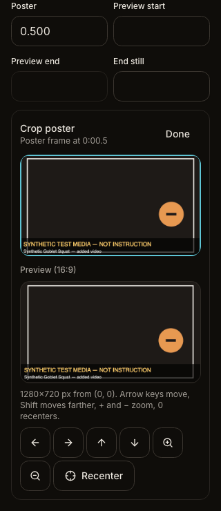
sha256 29eb16b65e5bef34…
sha256 ccc13c5e74143089…
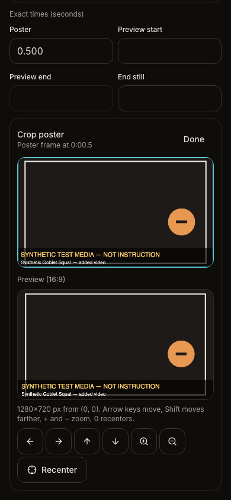
sha256 ccc13c5e74143089…
sha256 c845afafba7a9617…
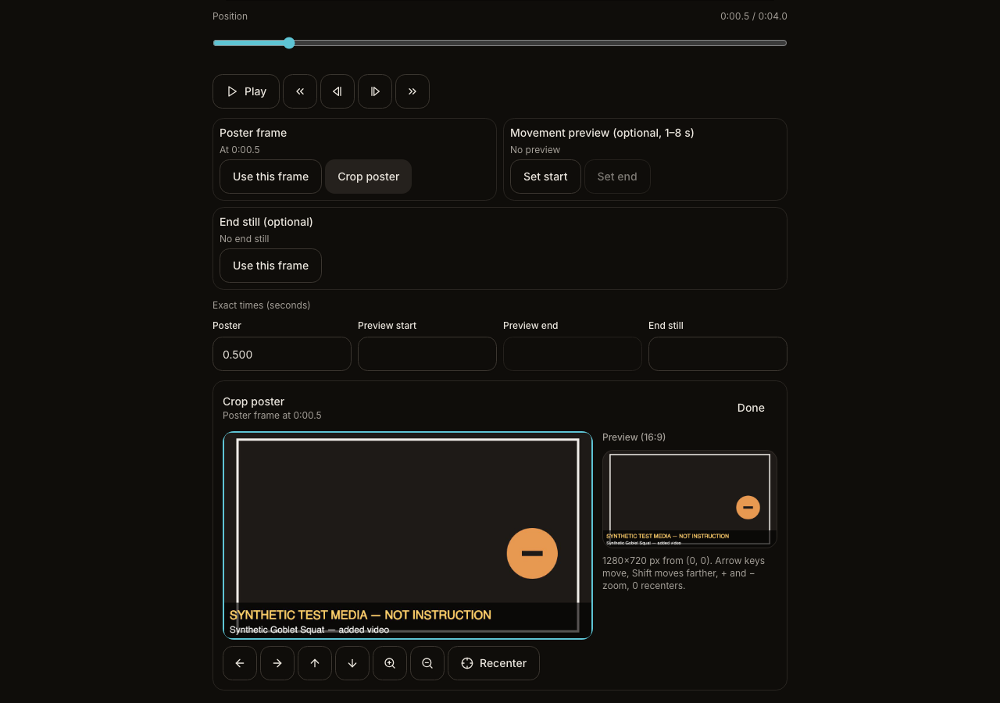
sha256 b737a0b4458627af…Saved poster time changed to 3.0 s (crop still open)

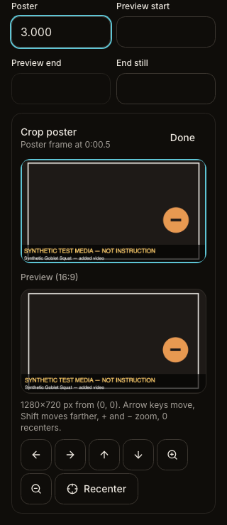
sha256 169b6a24d37ac564…
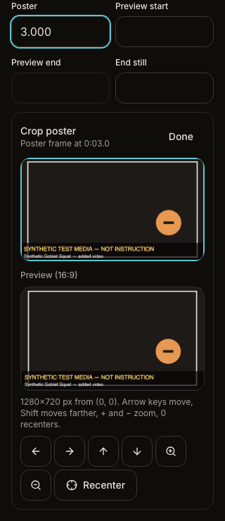
sha256 ec2e90a80b93f8a1…
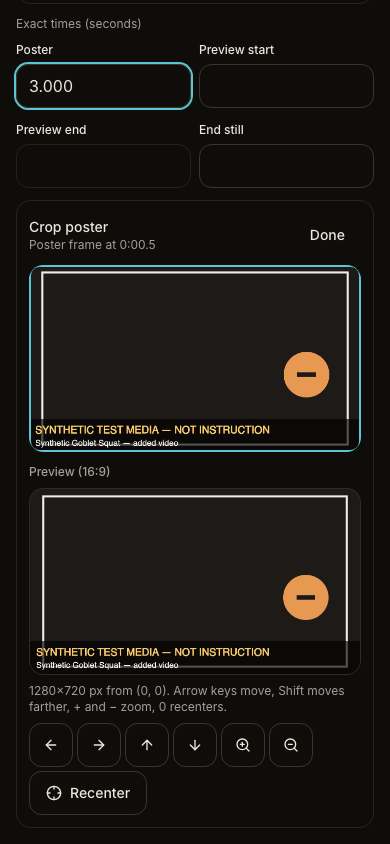
sha256 d3d784e9275e501e…
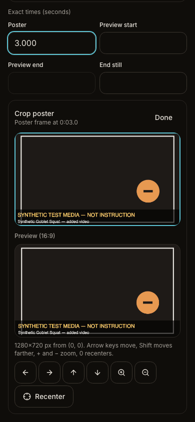
sha256 da9df79c2fc54df1…
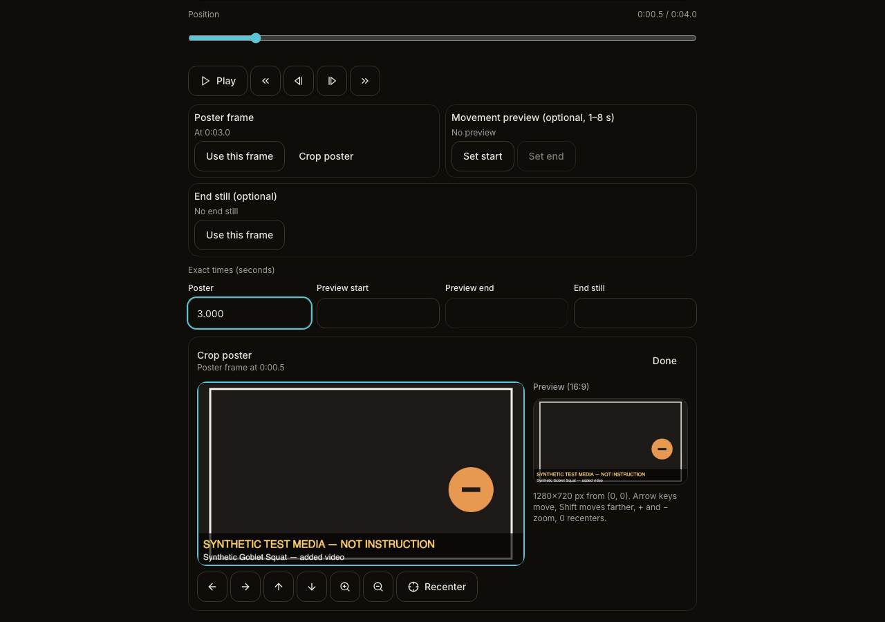
sha256 5885d3af82b2a245…
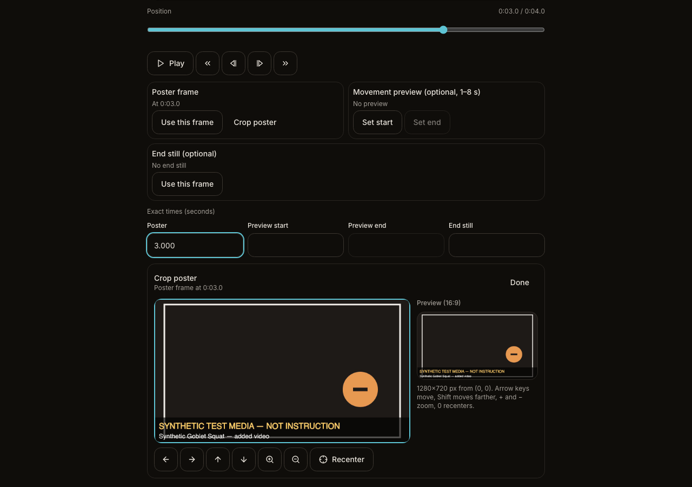
sha256 cbb1185ed0deb144…Keyboard crop edit

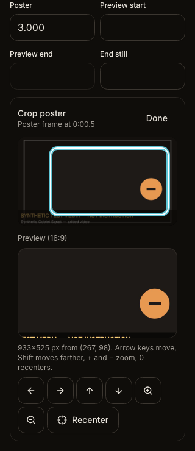
sha256 3a5b4ff3fc671514…
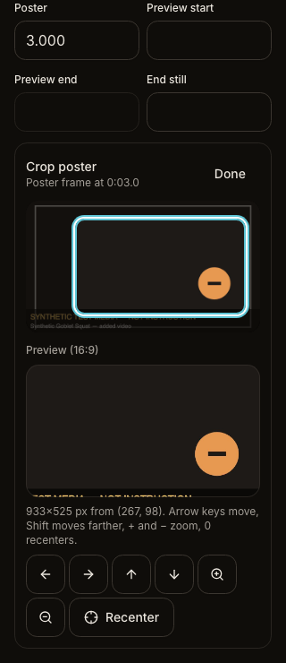
sha256 bfd2fbedc80cedb4…
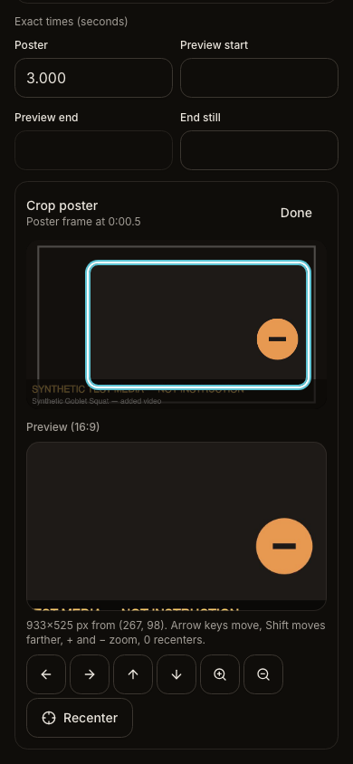
sha256 9f159a3df50383dd…
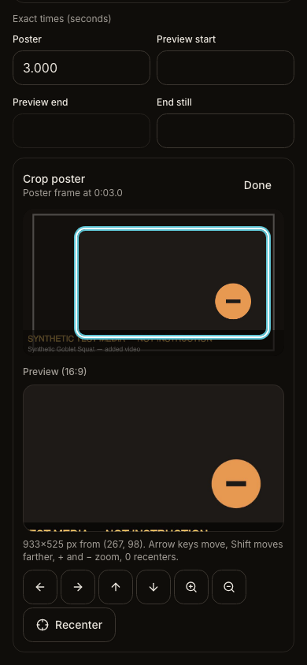
sha256 fa79f2c00c7fe418…
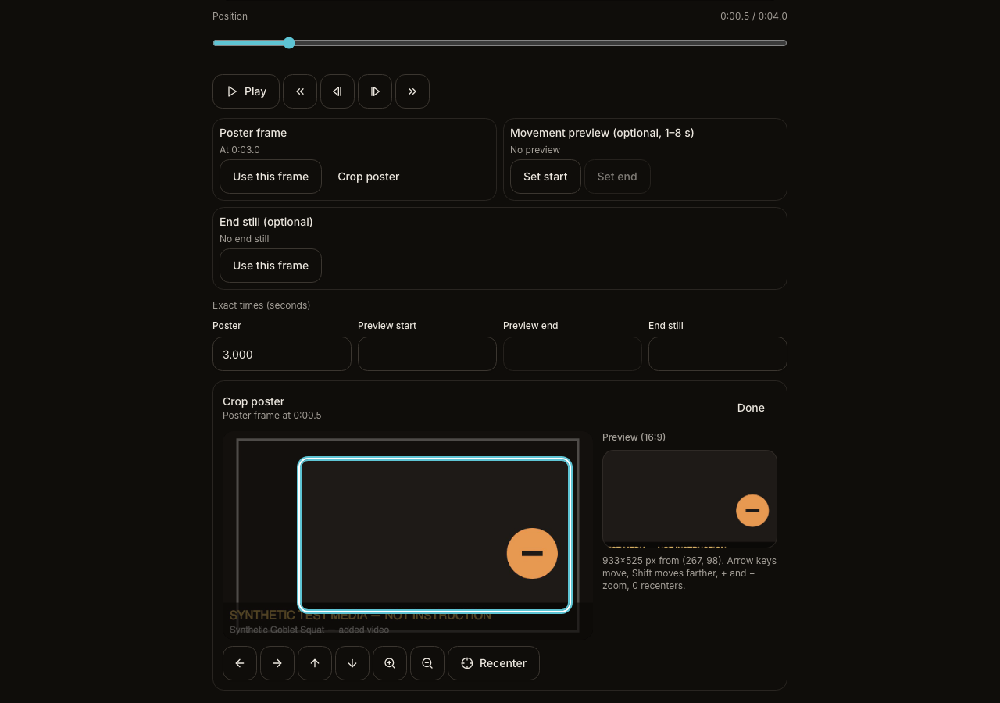
sha256 114111955ee89222…
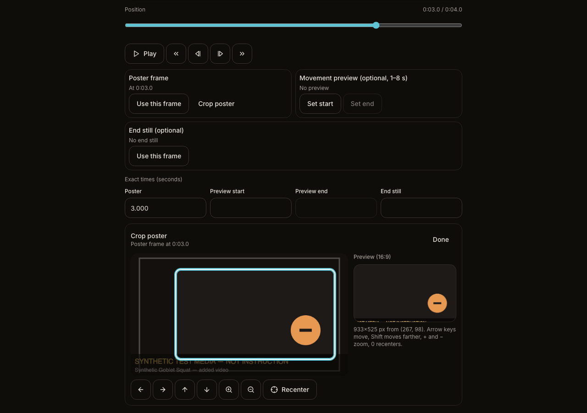
sha256 364eafb6f14ac9a4…